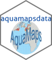

Welcome to ...
_. _. _. ._ _ _. ._ _ _| _. _|_ _.
(_| (_| |_| (_| | | | (_| |_) _> (_| (_| |_ (_|
| |
Introduction
aquamapsdata is an R package that can download and create a local SQLite database with datasets from AquaMaps.org.
These datasets are available to web browsers through https://aquamaps.org, but the aquamapsdata package offers an a couple of convenient functions for accessing this data programmatically in an IDE like RStudio.
Installing from github
If you want to install the latest version of the aquamapsdata package from github, you can do it like so:
remotes::install_github("raquamaps/aquamapsdata", dependencies = TRUE)Quick start
Load the package in your R environment:
library(aquamapsdata)
# downloads about 2 GB of data, approx 10 GB when unpacked
download_db()
default_db("sqlite")
am_citation()To see some quick usage examples to get you started, open the Vignette.
The package uses SQLite3 - a portable and fast database which is included in the RSQLite package.
Similar packages
A similar package which also provides the aquamaps algorithm is available at https://github.com/raquamaps/raquamaps.
Data source, Citation and References
aquamapsdata provides data output from https://aquamaps.org; when using data provided by the package in a publication, please cite this source:
- Kaschner, K., K. Kesner-Reyes, C. Garilao, J. Segschneider, J. Rius-Barile, T. Rees, and R. Froese. 2019. AquaMaps: Predicted range maps for aquatic species. World wide web electronic publication, www.aquamaps.org, Version 10/2019.
Content - Copyright and Disclaimer
Content from AquaMaps as provided by functions in this R package is licensed under a Creative Commons Attribution-NonCommercial 3.0 Unported License: 
You are welcome to include text, numbers and maps from AquaMaps in your own work for non-commercial use, given that such inserts are clearly identified as coming from AquaMaps.org, with a backward link to the respective source.
Considerations before publication
A researcher planning publication based on these datasets is invited to contact the AquaMaps team with queries related to specific content. The AquaMaps team can help with double checking for correctness prior to drawing conclusions and/or subsequent publication, and provide further clarification of update frequency, limitations and/or interpretation of unlikely results.
Please open an issue on the GitHub issue tracker or contact the team directly by email at Rainer Froese (rfroese (at) geomar.de) or Kristin Kaschner (Kristin.Kaschner (at) biologie.uni-freiburg.de).
Disclaimer
AquaMaps generates standardized computer-generated and fairly reliable large scale predictions of marine and freshwater species. Although the AquaMaps team and their collaborators have obtained data from sources believed to be reliable and have made every reasonable effort to ensure its accuracy, many maps have not yet been verified by experts and we strongly suggest you verify species occurrences before usage. The AquaMaps team will not be held responsible for any consequence from the use or misuse of these data and/or maps by any organization or individual.
Meta
- Please report any issues or bugs.
- License: AGPL
- Get citation information for
aquamapsdatain R by doing citation(package = ‘aquamapsdata’) - Please note that this package is released with a Contributor Code of Conduct. By contributing to this project, you agree to abide by its terms.
- Credits:
aquamapsdatawould have not been possible without many amazing R libraries, such as the “tidyverse” packages and various packages from ROpenSci.